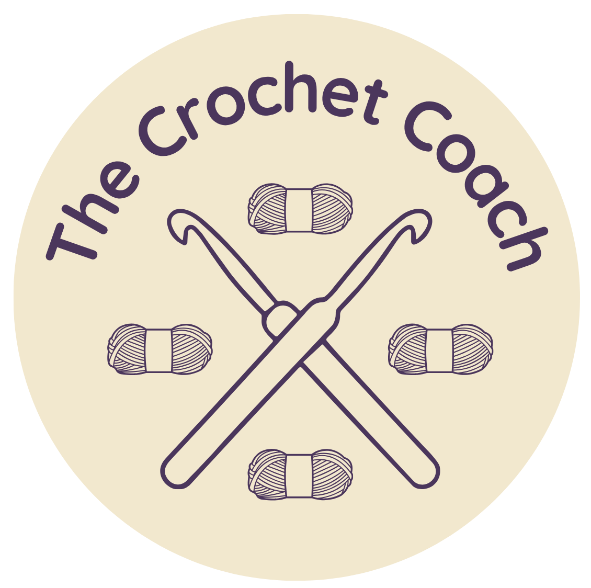

About The Crochet Coach
A friendly place to learn, practice, and enjoy crochet.

Why The Crochet Coach?
Learning to crochet can feel overwhelming when you're trying to figure out what supplies to buy, which stitches to learn, and how to read a pattern.
The Crochet Coach was created to put all of those basics in one place. Whether you've never held a crochet hook before or you're looking for a new project, this website is here to help you learn at your own pace.
My Crochet Journey
Hi, my name is Geethika! I am a high school student who enjoys crochet. This website is a collection of what I've learned along the way, created to make the learning process a little easier for someone just getting started.
No matter where you are in your crochet journey, it is truly an art that is worth learning. I wish you all the luck in continuing your exploration!